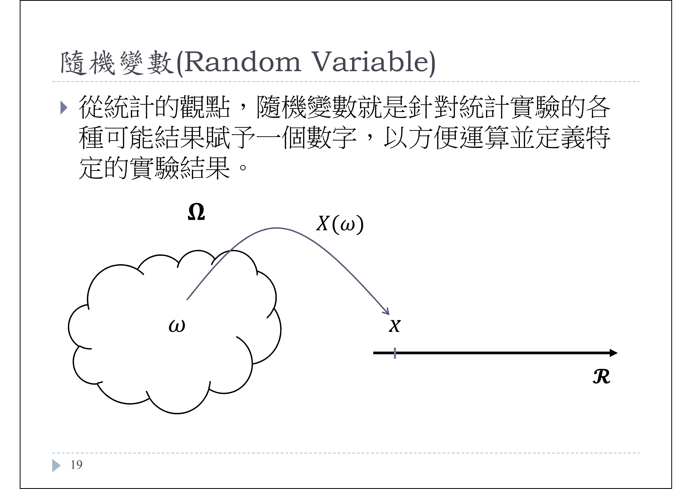

1 機率分布
1.1 樣本空間與事件

樣本空間omega裡的事件，會對應到某個實數X。不同的事件是有可能對應到相同的X。
例如，假設如果丟骰子出現偶數設為一，出現奇數設為零。
丟骰子出現偶數雖然有三種，但是對應的數值相同。
1.2 事件的獨立與互斥
事件的獨立與互斥之間的差異
A事件和B事件獨立：A事件與B事件的發生是沒有關聯的，比如骰子丟第一次出現的點數(事件A)與骰子丟第二次出現的點數(事件B)彼此是不會互相影響的，所以我們可以稱事件A、B為獨立的。
A事件和B事件互斥：A事件與B事件的交集是空集合，即A、B事件不可能同時發生，比如丟一次骰子出現1點(事件A)與丟一次骰子出現3點(事件B)，在只丟一次骰子時，A、B事件不可能同時發生，故A、B事件互斥
「若P(A∩B)＝P(A)×P(B) 則 A事件與B事件獨立」實例
例1： 舉例來說，丟一個骰子出現的點數是偶數(A事件)，又必須是大於等於5(B事件)。我們知道一顆骰子出現偶數的機率是1/2，大於等於五的機會是1/3，所以1/21/3=1/6，1/6是(A、B)兩個事件同時出現的機率；而要滿足這個交集條件(丟一顆骰子，點數是偶數且點數大於等於5)，只有當骰子丟出點數是六時才滿足，而這個機率是1/6。可以看到1/6=1/6，所以代表(A、B)這兩個是獨立事件。 如果我們現在問說丟一個骰子出現的點數是偶數，而又必須是大於等於四的機率。出現偶數的機率1/2，而大於等於四的機會也是1/2，1/21/2=1/4；但是滿足這兩個條件同時出現的機率，事實上是1/3，也就是當骰子出現點數四或六的時候。因為1/4不等於1/3，所以表示這兩個事件不獨立。因為如果點數大於等於4的話，就會影響骰子是偶數的機會。
例2： 若用擲硬幣事件思考，每次丟硬幣的機率若為正面是1/2，第一次和第二次丟硬幣是獨立事件，兩次都為正面的機率就是1/2*1/2)
1.4 隨機變數與機率分布
隨機變數是一個函數，把樣本空間的事件對應到一個數字(講得更準確一些－對應到實數域裡的一個實數)。而這些事件發生的可能性，則是它的機率分布。
隨機變數、離散(間斷)型隨機變數、連續型隨機變數之間的差異?
可以將隨機變數依資料類型分為離散型隨機變數或是連續型隨機變數。也就是說間斷隨機變數是隨機變數的一種、而連續隨機變數也是隨機變數的一種。
離散型隨機變數是指其數值是可數的，或數值可以一一列舉出來，像是1, 2, 3 …。例如，丟一枚銅板會出現正面或反面，我們把丟出正面設為1 (事件「正面」對應到一個數字「1」)，反面設為0 (事件「反面」對應到一個數字「0」)，這樣一個函數就是一個隨機變數，又因為其數值不是一就是零，是可以一一列舉出來的，所以是個離散型隨機變數。
連續型的隨機變數是指其數值是不可數的，或數值無法一一列舉出來，例如某個區間的所有實數。連續型隨機變數的取值範圍沒有一定要是負無限大到無限大。例如，一個燈泡的壽命可能從幾百個小時到幾千個小時，中間每一個數字都有可能，所以燈泡壽命是一個連續型的隨機變數。
事實上究竟哪些現象是連續性隨機變數，有時候是我們自己的認定。血壓的分布或是身高的分布可以想像成連續型，因為理論上它可以是某個範圍裡的任何一個實數。
如何解釋連續型隨機變數(簡稱連續變數)的機率分布圖?
P(X=a)=0這句話是針對連續隨機變數的定義嗎?
因為X是連續隨機變數，所以不會有出現特定值的狀況，因為都是以區間來表示的，這樣解釋對嗎?
上圖是連續變數X的機率分布圖。橫軸代表X的值，縱軸代表機率值。
X=0時對應的機率密度函數值大約為0.4該怎麼解釋? (是否沒有意義?) 連續機率分佈不會講X出現某一個特定值的機率(當X等於某個數值的時候，機率是多大)。可以把它想成，一個點是沒有長度的，但是很多個點連在一起就有長度，所以一個區間就可以算曲線下面積，而曲線下面積即為機率，因此我們一定要講某個區間的機率才有意義。所以X等於0對應到縱軸等於0.4，並不代表X等於0的時候機率是0.4。
也就是說，連續變數有「單點機率為零」的特性，寫作數學式就是P(X=a)=0。
舉例來說，假設血壓是一個服從常態分布的隨機變數，我們不會講一個人血壓剛好是140毫米汞柱的機率是多少，但是我們可以算血壓在130到150之間的機率是多少。
既然說連續型變數在某個區間的機率才有意義，那麼是否p.d.f和c.d.f其實都是代表一個區間的機率，所以可以說基本上這兩個函數所呈現的意義是一樣的?
- CDF 和 PDF 意義還是不一樣的。CDF是一個累積機率分布函數，而PDF是發生事件的機率函數。數理統計的教科書會告訴你，對一個連續型的隨機變數，對它的PDF求積分就會得到CDF。以標準常態分布為例，如果我們從負無限大到a這個區間做PDF的積分，得到的數值會等於CDF在z等於a的時候的累積機率，但這兩個函數是不一樣的。
1.5 標準常態分布、標準化
為什麼任意常態分布轉為標準常態分布之後，曲線下面積和原常態分布一樣，但圖的橫軸變成是數字(正負1,2,3)？
這是因為我們把每一個X減掉它的平均值，所以中心化之後的隨機變數的期望值變成是零。
1.6 期望值與變異數
「機率分布」和「期望值」的連結是什麼呢? 當已知事情發生的機率後，什麼時候會需要用到「期望值」呢?
從公式來看，期望值就是加權平均數。在數理統計教科書裡很多的公式都會用到期望值。從現實的角度舉例來說，假設我對於班上學生的身高一無所知，我要猜某一個同學的身高有多高，最合理的猜測就是用班上同學身高的期望值，也就是算術平均數，來猜他的身高。如果班上有150個同學，我每一個都猜他們的身高等於平均身高，會比我猜任何其他數字所得的誤差來得小，也就是變異數最小。
「變異數」有沒有白話一點的解釋?
或許可以把它想成是每一個觀察值X和平均值的距離的平方平均會是多少？基本上就是在描述資料分散程度的一種指標。
隨機變數X之變異數\(Var(X) = sigma^2 = E(x-\mu)^2\)，設f(x)為X的pdf。 當X為離散型時：σ2=∑▒〖(x-μ)2 f(x)〗 當X為連續型時：σ^2=∫_(-∞)∞▒〖(x-μ)2 f(x)dx〗
由上述公式來看，這裡的變異數可以說是母群體變異數的pdf嗎?
這公式並不是變異數的PDF，而是可以看成是每一個X的觀測值和X的平均值之間距離平方的期望值。
1.7 白努力實驗
白努力實驗只做一次，而他可以得到P的原因是因為通常白努力分布會用在已知所有結果可能為和以及各事件機率的情況下嗎？(例如已經知道銅板只會有正反面機率一定是1/2,1/2)
只做一次白努利實驗我們得到的P值，不是1就是0。所以要做很多次白努利實驗，我們才能得到比較正確的p值。簡單地說，機率理論是當我們知道p的時候，可以推論某一個事件發生的可能性有多大，而統計則是要從觀察到的資料，來推估p有多大。
##卜瓦松份布 - 二項式分佈 {#poison_binomial}
卜瓦松實驗的可能值為無限，所以越後面的機率越小，那結合前一周所學的，我們可以得知卜瓦松分布一定是右偏對嗎?
通常看到的是右偏，不過你可以用R裡頭產生卜瓦松分布的函式rpois試看看在什麼情況下，看起來其實會是接近對稱的。例如：hist(rpois(1000, 0.5), breaks=20)，然後從0.5改成5和50。
課程投影片(下圖)指的是真實世界的事件要符合卜瓦松分布的話，此事件發生的機率就要很小(<1％)，這樣才能符合卜瓦松份布？如果是連續投擲幾近無限次的硬幣還是要使用二項式分佈？
這裡指的是在什麼條件之下，一個服從二項式分布的隨機變數會接近一個卜瓦松分布，也就是你可以把它想像成好像服從卜瓦松分布。舉例來說，假設一枚硬幣出現正面的機會只有1%，如果丟了10,000次，出現正面的次數，可以用二項式分布去計算，也可以用卜瓦松分布來計算，結果會差不多。
卜瓦松分布的期望值、機率計算，以下圖為例。
- 這邊的期望值是 196/280=0.7 嗎? (死亡總人數/總團數)
是的，從表格我們可以算出來死亡人數是196，除以總軍團數280，就是每一個軍團士兵死亡人數的期望值。然後代入Poisson分佈的公式，就可以算出沒有士兵死亡，1名士兵死亡，兩名死亡等等的機率，然後乘上280，就得到預期沒有士兵死亡，一名士兵死亡的軍團數等等。
- 為什麼期望值是196/280=0.7，從期望值的定義出發不應該是每次可能的結果乘以其結果概率的綜合嗎?
好問題，從期望值的定義出發，假設每一個軍團都是獨立，機率都是1/280，所以期望值等於1(91/280)+2(32/280)+3(11/280)+4(2/280)=0.7。